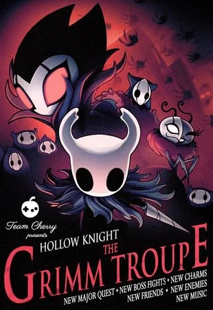

La Compañía de Grimm es el segundo de los 4 DLCs gratis para Hollow Knight, siendo el primero Sueños Ocultos.
Fue lanzado el 26 de Octubre del 2017.

Contenido Añadido
Jefes
Grimm
Rey Pesadilla
Enemigos
Grimario Novato
Grimario Maestro
Grimario Pesadilla
NPCs
Divine
Brumm
Nymm
Amuletos
Niño de Grimm
Escudo Onirico
Maestro de sprints
Cancion de Tejedora
Melodia Despreocupada
Fuerza Irrompible
Codicia Irrompible
Corazon Irrompible
Areas
Sendero Del Dolor(Palacio Blanco)
Como Activar
Existe un muro destructible en Acantilados Aulladores que lleva a "El cadáver de un gran insecto". Tras golpearlo con el Aguijón Onírico y encender la linterna pegándole con el aguijón, se activará el DLC. Posteriormente, deberás dirigirte a Bocasucia. En este sector, se colocarán unos letreros rojos que indican hacia la izquierda del pueblo. Después de la tienda de Sly, hacia la izquierda, te encontrarás con el Viejo Insecto y con 2 casas a las que podrás entrar. 2 insectos inofensivos estarán esperando en las afueras de la casa.
El Viejo Insecto dice: "¡Ahh! ¡Mira Ahí! ¡Algo extraño y siniestro ha aparecido de repente!. Ugh, me llena de terror. Creo que mejor intentaré ignorarlo."
La casa de la izquierda encontrarás a Divine, quien en un principio sólo señalará que "quiere algo" que puede oler y se encuentra debajo de ella.
La casa de la derecha podrás encontrar a un ser llamado Brumm, quien te sugerirá que te dirijas a hablar con el maestro Grimm, con lo que se dará inicio al DLC.